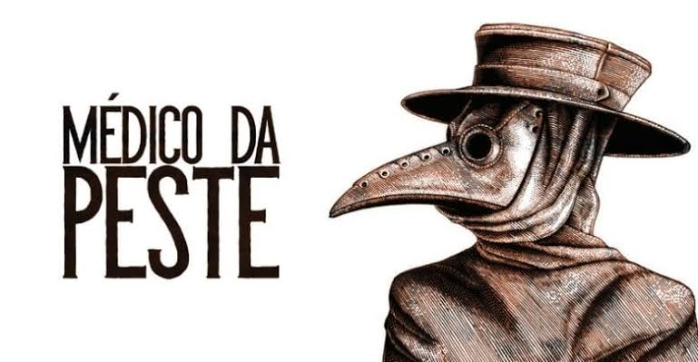

|  | Sobre | Sintomas | Tratamento |
Sintomas da Peste NegraRequer um diagnóstico médico Os sintomas incluem inchaço dos gânglios linfáticos, que podem ficar grandes como ovos de galinha, na virilha, na axila ou no pescoço. Eles podem ser sensíveis e quentes. Outros sintomas incluem febre, calafrios, dor de cabeça, fadiga e dores musculares.
As pessoas podem ter:Dores locais: no abdômen ou nos músculosTosse: com sangue No corpo: calafrios, fadiga, febre ou mal-estar No aparelho gastrointestinal: diarreia, náusea ou vômito Também é comum: inchaço, inchaço dos gânglios, catarro, delírio, dor de cabeça, falta de ar, gânglio linfático inchado e sensível, pus ou sangramento. | |
Todos os direitos reservados |
|